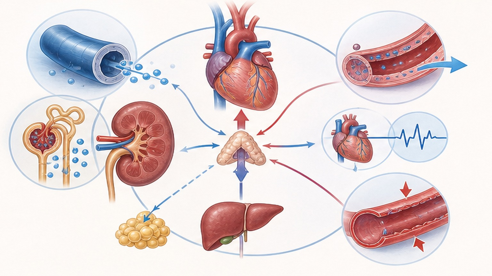
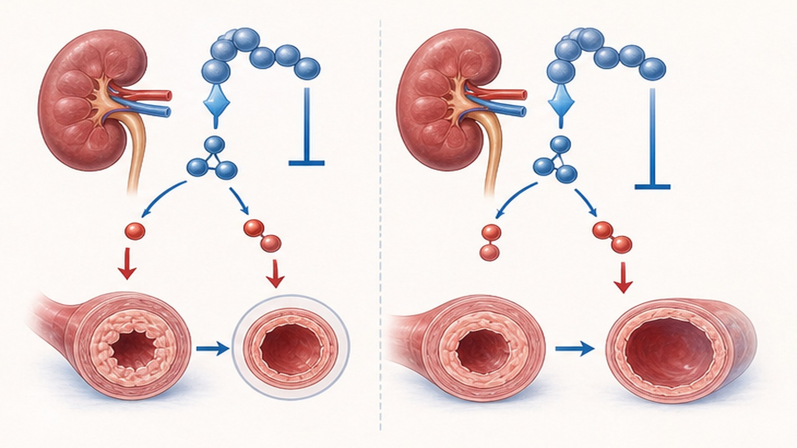
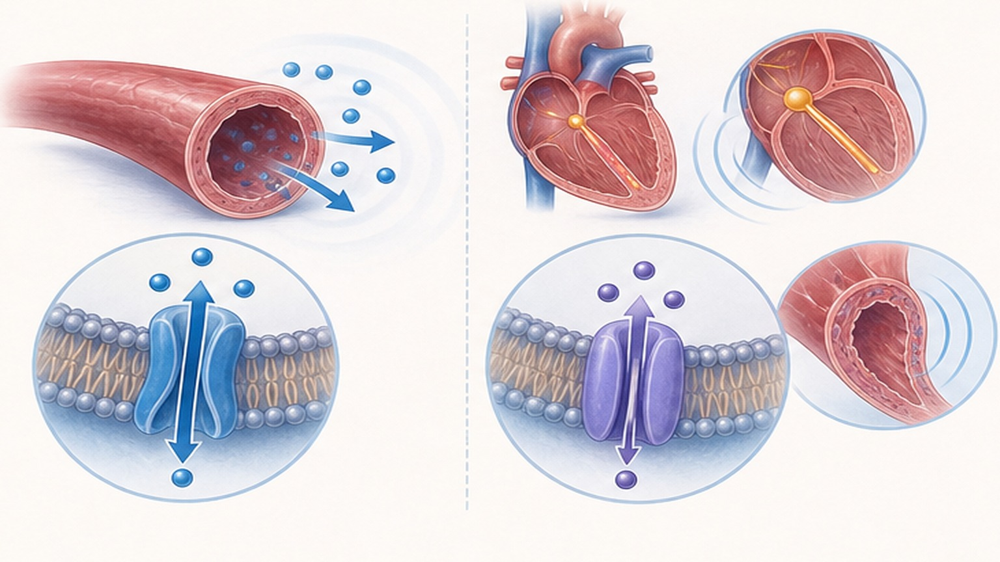
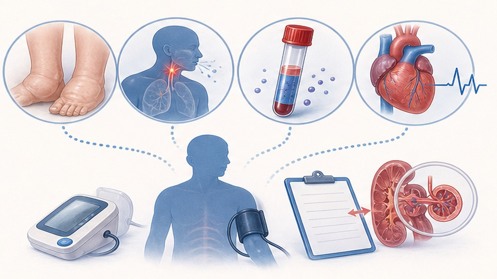

항고혈압제,
클래스별 비교 정리
ACEi · ARB · CCB · 이뇨제(Diuretics) · 베타차단제 — 효력·적응증·금기·부작용 한눈에
5대 1차 항고혈압제 클래스
현행 가이드라인이 1차 약제로 권고하는 다섯 가지 약물군과 그 비중
단일제 최대용량 < 2제 병용 반량
모든 클래스에서 용량-반응 곡선이 평탄 — 병용이 효력·내약성 모두 우월
표준용량의 2배 증량은 추가 BP 감소가 ~20%에 그치지만, 2제 병용은 ~5배의 추가 효과를 냅니다.
동일 클래스 안에서 약제 선택을 최적화하는 것(예: HCTZ → Chlorthalidone, Losartan → Azilsartan)도 SBP 4~5 mmHg 추가 감소로 이어집니다. 일반적으로 RAAS 차단제(ACEi/ARB) + CCB 또는 + Thiazide 조합이 표준이며, β-blocker는 동반질환이 있을 때만 병용합니다.
6개 약물군의 작용 기전
RAAS 차단(ACEi/ARB), Ca 채널 차단(CCB-DHP/Non-DHP), Na 배설(Thiazide/Spironolactone), 교감 차단(β-blocker)

클래스별 SBP 감소폭 (위약 보정, 표준용량)
평균 효력은 비슷하나 클래스 내 약제 선택이 4~5 mmHg 추가 감소를 만듭니다
ACEi vs ARB — 어떻게 다른가
효력은 동등 — 부작용 프로필과 특수 적응증에서 차이
- 대표: ramipril, perindopril, enalapril, lisinopril
- 적응: 심부전·심근경색 후 강력한 mortality 근거
- 당뇨병성 신증·단백뇨에서 1차 선택 (역사적 근거)
- 마른기침: ~10% (bradykinin 축적, 한국인 더 흔함)
- 혈관부종(angioedema): 0.1~0.7% (드물지만 응급)
- 저렴 — 국내 보험 1차 처방 옵션
- 대표: candesartan, telmisartan, azilsartan, fimasartan
- 적응: ACEi 동등 효과 + 마른기침 거의 없음
- 당뇨병성 신증·심부전 모두 충분한 근거 축적
- ACEi 불내성(기침·혈관부종) 환자에서 표준 대체
- 고효력 ARB(azilsartan, candesartan) 우선 고려
- ARB + ACEi 병용 금지 (양쪽 부작용 가산)

CCB-DHP vs CCB-Non-DHP
동일 클래스로 묶이지만 작용 부위·심박수 효과·금기가 완전히 다릅니다
- 대표: amlodipine, lercanidipine, cilnidipine, felodipine
- 주작용: 강력한 동맥 확장, SBP 12~15 mmHg 감소
- 심박수: 반사성 빈맥(amlodipine +2~4 bpm)
- 적응: 노인·고립성 수축기 고혈압·관상동맥질환
- 부작용: 발목 부종(amlodipine 19%, lercanidipine 9%)
- 근거: ALLHAT, ASCOT, VALUE — 풍부한 outcome 데이터
- 대표: diltiazem, verapamil
- 주작용: 동맥확장 + 심박수·전도 감소
- 심박수: 5~15 bpm 감소 (rate control 효과)
- 적응: 빈맥 동반 고혈압·심방세동 rate control
- 부작용: 변비(verapamil), 서맥, AV block
- 금기: HFrEF, 고도 AV block, β-blocker 병용 시 주의

이뇨제 4종 비교 — Thiazide-like ≥ Thiazide
Chlorthalidone · Indapamide >> HCTZ — Spironolactone(MRA)은 저항성 고혈압의 4차 약제
클래스별 대표 부작용 프로필
처방 전·복용 중 환자에게 안내해야 할 핵심 부작용

절대 금기 조합 / 응급 상황
처방 전 반드시 확인해야 할 두 가지 적색 신호 — 위반 시 사망·중증 합병증 위험
실전 처방 체크리스트 8가지
클래스 선택과 병용을 결정할 때 임상에서 반드시 확인할 핵심 항목
같은 클래스 안에서도
약제 선택이 차이를 만듭니다
동반질환·내약성·약물 상호작용을 종합적으로 고려한 맞춤 처방을 권장합니다
광교중앙로 298, 4층
토요일 08:30~13:30
같은 자료를 다시 볼 수 있어요